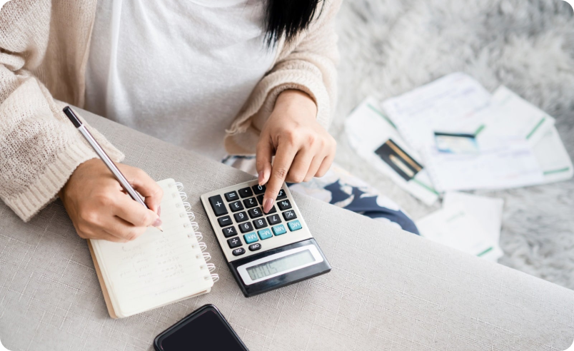

Уроки и тесты / Глава 2
Глава 2. Планирование трат. Контроль расходов.
Планирование трат и контроль расходов играют важную роль в финансовом благополучии. В нашем современном обществе, где доступ к потребительским товарам и услугам разнообразен и соблазнителен, осознанное управление финансами становится необходимым навыком.
Планирование не заканчивается на определении доходов и расходов. Оно представляет собой процесс определения целей и приоритетов в трате денежных средств. Это значит, что вы осознанно решаете, на что вы собираетесь тратить свои деньги в определенные периоды времени.
Планирование трат требует анализа текущей финансовой ситуации, определения постоянных расходов (какие платежи нужно осуществить каждый месяц) и непредвиденных расходов (неожиданные события или аварии). Это нужно для того, чтобы быть в курсе, где и на что вы тратите деньги.
Составление личного бюджета может быть полезным для эффективного управления вашими финансами. Вот несколько советов по составлению личного бюджета:
Рассчитайте все источники своего дохода, включая зарплату, дополнительные доходы или инвестиции.
Определите свои обязательные расходы, такие как кредитные платежи, арендная плата, коммунальные услуги и страховка. Учтите эти расходы в своем бюджете.
Запишите все расходы, которые могут меняться каждый месяц, такие как питание, развлечения, покупки и транспорт. Оцените примерную сумму на каждую категорию и добавьте их в бюджет.
Включите в свой бюджет некоторую сумму на непредвиденные расходы или чрезвычайные ситуации. Также рекомендуется создать фонд аварийных ситуаций, чтобы иметь подушку безопасности.
Проанализируйте свои расходы, чтобы найти возможности для сокращения затрат. Например, вы можете сократить затраты на рестораны, отказаться от ненужных подписок или использовать общественный транспорт вместо личного автомобиля.
Отслеживайте ваши расходы и доходы на протяжении месяца. Это поможет вам понять, на что вы тратите больше всего, и можете вносить коррективы в свой бюджет, если необходимо.
Определите свои финансовые цели, такие как погашение долгов, сбережения на пенсию или покупка жилья. Включите эти цели в свой бюджет и откладывайте определенную сумму каждый месяц.
Используйте бюджетную таблицу или специальное приложение для отслеживания своих расходов и доходов, чтобы иметь более ясное представление о своем финансовом положении.
Ваш бюджет должен быть гибким, чтобы адаптироваться к неожиданным событиям или изменениям в вашей жизни. Постоянно пересматривайте и обновляйте свой бюджет, чтобы он отражал вашу текущую ситуацию.
Изучайте основы финансового планирования и управления деньгами. Чем больше вы знаете о финансах, тем лучше сможете управлять своими средствами и достигать финансовой устойчивости.
"Самый лучший способ реализовать свои мечты – это начать с планирования своих финансов." – Мерил Линч
Помимо планирования трат, контроль расходов также является важной составляющей финансового благополучия.
Контроль расходов предполагает регулярное отслеживание фактических расходов и сравнение их с запланированными.
Вот несколько советов для успешного контроля расходов:
- проверяйте свои финансовые записи: регулярно просматривайте свои банковские счета, кредитные карты и другие финансовые отчеты, чтобы убедиться, что все расходы правильно отражены. Обратите внимание на любые непредвиденные или незапланированные траты.
- используйте технологии: существует множество приложений и онлайн-инструментов, которые помогают отслеживать расходы и управлять бюджетом. А мы предлагаем нашу таблицу расходов. Они могут автоматически группировать ваши финансовые данные и предоставлять детальные отчеты о ваших трат.
- выявляйте ненужные расходы: анализируйте свои траты и ищите области, где можно сократить расходы. Многие люди обнаруживают, что тратят слишком много на рестораны или кофе по дороге на работу. Попробуйте найти альтернативные способы экономии денег, например, готовьте еду дома или приносите с собой бутерброды.
- сохраняйте запасной фонд: создайте фонд для непредвиденных расходов. Непредвиденные обстоятельства, такие как авария на машине или незапланированная медицинская процедура, могут серьезно нарушить ваш бюджет, если на них нет отложенного финансирования.
В заключение, планирование трат и контроль расходов являются важными инструментами для достижения финансовых целей и обеспечения финансовой стабильности.
Они помогают сделать финансовые решения осознанными и обеспечивают более эффективное использование денежных ресурсов. Начните применять эти подходы сегодня и почувствуйте разницу в своих финансах.